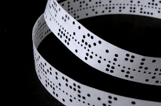
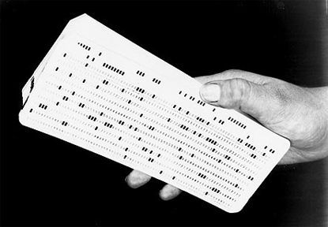
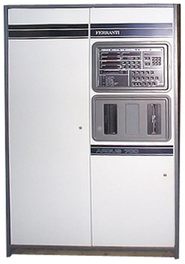

Computers
Austin asked if I programmed computers and how big were those computers. Well, the first computer I programmed was when I was at university. The computer was in a lot of cabinets, each the size of a large fridge, that filled a big room. You couldn't use the computer yourself, you had to write your program in paper and hand it to someone who would type your program into a machine that created a punched tape, as shown in the first photo. The tape was then fed into the computer and you got back a print-out of your programme and the results.
When I started work it was much the same, except that we used punched cards. We punched them ourselves using a machine as big as a desk.
At university we used a programming language called ALGOL, but at work we used a language called FORTRAN.
Later, I moved to a company that made computers to help factories make things. The first computer I worked on was for a factory making a type of plastic called PVC. There we used a programming language called CORAL and then gave instructions on how to control the factory using PMS. Those computers, called Argus 700, would fit in one fridge-sized cabinet.
Computers were getting smaller, but there was still a long way to go.
Turn the page for more.